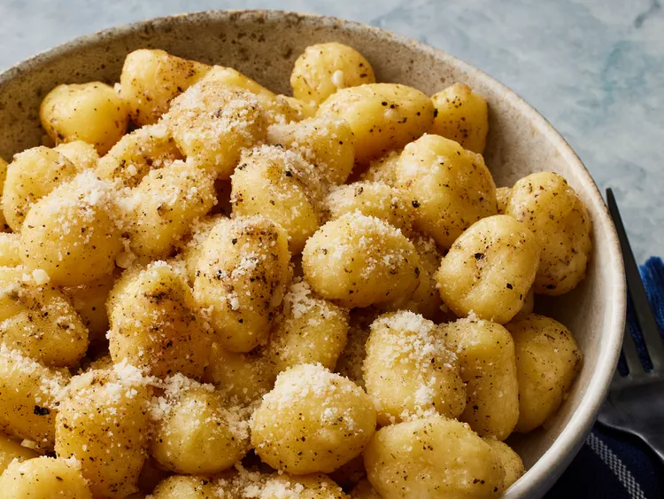

gnocchi

Gnocchi (singular gnocco) are Italian dumplings made with flour, eggs, and potatoes. Gnocchi can be served in tomato sauce, tossed with pesto, or sautéed with butter and herbs.
You'll find a detailed ingredient list and step-by-step instructions in the recipe below, but let's go over the basics:
Ingredients
Directions
- Boil and drain the potatoes, then mash or pass through a ricer.
- Combine the ingredients, then knead into a ball.
- Divide the dough into four even portions and shape into "small pillows."
- Cut the pillows into pieces.
- Boil and drain the gnocchi.